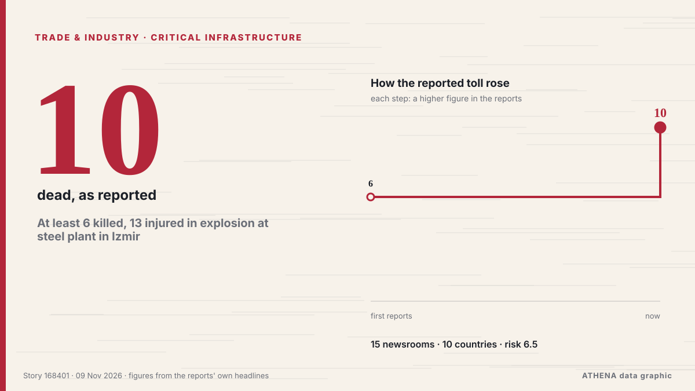

Εμπόριο, Βιομηχανία & Υποδομές
ΧορηγούμενοΠαρουσιάζεται από  Cybernetics and Artificial Intelligence Lab Welcome to the Cybernetics and Artificial Intelligence Laboratory, established at the Department of Business Administration of the National and Kapodistrian University of Athens. The lab is headed by Professor Dimitrios Thomakos. The lab aims to do research that can be published in top venues. Our research uses tools and methods of Artificial Intelligence, and lies in the following areas: - Forecasting - Decision making - Cyber security - Finance We are always looking forward to collaborating with exceptional students!
Cybernetics and Artificial Intelligence Lab Welcome to the Cybernetics and Artificial Intelligence Laboratory, established at the Department of Business Administration of the National and Kapodistrian University of Athens. The lab is headed by Professor Dimitrios Thomakos. The lab aims to do research that can be published in top venues. Our research uses tools and methods of Artificial Intelligence, and lies in the following areas: - Forecasting - Decision making - Cyber security - Finance We are always looking forward to collaborating with exceptional students!
Οι τίτλοι των ειδήσεων παρουσιάζονται στα αγγλικά, όπως δημοσιεύτηκαν.

Κρίσιμες υποδομέςAt least 6 killed, 13 injured in explosion at steel plant in Izmir
An explosion at a steel plant in Izmir, western Türkiye, killed six people and injured 13 others, on Monday, as rescue teams searched for 10 people trapped under rubble. από Daily Sabah
| 27 Οκτ | 103 |
|---|---|
| 28 Οκτ | 94 |
| 29 Οκτ | 95 |
| 30 Οκτ | 99 |
| 31 Οκτ | 36 |
| 1 Νοε | 65 |
| 2 Νοε | 128 |
| 3 Νοε | 91 |
| 4 Νοε | 93 |
| 5 Νοε | 105 |
| 6 Νοε | 73 |
| 7 Νοε | 40 |
| 8 Νοε | 38 |
| 9 Νοε | 31 |
China extends suspension of 24 pct additional tariff on U.S. goods for two months
China’s Finance Ministry said in a statement on Monday that it will extend the suspension of an additional 24% tariff on imports from the United States (US) for two months, effective November 10. από FXStreet
Newsroom Bomb Threats Follow Escalating European Flight Hoaxes
Newsrooms in Ireland and Bulgaria received emailed bomb threats on Friday from a purported “Mikhail Andropov,” claiming responsibility for a widening wave of hoax threats disrupting passenger flights… από Insurance Journal
Fires caused by Russian drone attack extinguished in Kyiv
Firefighters in Kyiv have extinguished fires caused by a Russian attack on the morning of November 9. από Ukrinform (English)
Russians attack inactive warehouses for third time in Odesa region, sparking fire
On November 9, Russian forces attacked a logistics facility in the Odesa region for the third time. από Ukrinform (English)
Met Office 17 hour 'flight cancellation' warning issued for Merseyside
Disruption is expected to travel across road, rail and flights. από Liverpool Echo
Turkey courts Egypt to tip the scales in eastern Mediterranean power game
This week’s joint naval exercises between Turkey and Egypt in the eastern Mediterranean are the latest move in a burgeoning partnership, as Ankara intensifies its efforts to draw Cairo closer and… από RFI English
Oman urged to turn logistics gains into growth
MUSCAT, NOV 9Oman must turn stronger demand for its ports and transport networks into lasting investment and broader private-sector growth, as gains from regional trade disruption... από Oman Observer
Filipino seafarer killed in Persian Gulf tanker explosion
A Filipino seafarer died after an explosion aboard the Marshall Islands-flagged oil products tanker MT Velos Sapphire in the Persian Gulf on 5 November, the… από Daily Tribune
Iran says no unauthorised vessels transited Strait of Hormuz overnight after navigation aids destroyed
DUBAI, Nov 9 (Reuters) - Navigational aid systems in the south of the Strait of Hormuz were destroyed and no unauthorised vessels transited the maritime route overnight, an unnamed Revolutionary… από Al-Monitor
Iran says 2-day proposal to US offers roadmap for restoring security in Strait of Hormuz
Tehran says no new proposal submitted to Washington, demands end to US naval blockade, sanctions relief, confirms recent IAEA inspection of Bushehr nuclear facility. από Anadolu Agency (English)
Iran: Two tankers caught fire in Hormuz after hitting mines
Coalition says it destroyed two ballistic missile launchers The Coalition has released footage it says shows the targeting and destruction of two ballistic missile launch platforms. από Gulf News
FAO Food Price Index falls in October
Indices for cereals, dairy and meat products decline. από World Grain
GCC states sign landmark agreement to advance Gulf railway project
Dubai: Gulf Cooperation Council (GCC) countries signed a landmark railway agreement in Bahrain on Sunday, as work on the 1,700km network linking all six Gulf states surpassed 50 per cent completion… από Gulf News
Greece Resumes Cyprus Cable Surveys as Turkey Challenges Maritime Rights
Greece is moving ahead with seabed surveys for the Great Sea Interconnector (GSI), the €1.9 billion electricity project linking Crete and Cyprus, despite renewed Turkish objections over maritime… από Greek Reporter
AGOA warning should accelerate South Africa’s export diversification
The proposed loss of AGOA benefits from 1 January 2027 should push South Africa to diversify export markets, strengthen regional trade and accelerate reforms that lower production and logistics costs. από IOL
Alphabet discloses $548M stake in chipmaker Qualcomm
Alphabet, Google’s parent company, owned nearly 3 million shares in chipmaker Qualcomm at the end of September, a stake worth $547.9m, Reuters reported on Friday. από The Next Web
Hapag-Lloyd passes 1m teu in Africa and targets 1.7m teu by 2030
Hapag-Lloyd's African volumes have crossed 1m teu, the carrier said as it marked 20 years in South Africa. από Container Magazine
KONGSBERG expands Aegir SSA sonar family alongside virtual operator for maritime security and navigation
With the launch of Aegir17 and Aegir57N, KONGSBERG is now taking orders for all three models in its Aegir SSA (Subsea Situational Awareness) sonar family, offering tailored solutions for critical… από Naval News
ESG Shipping Awards International – THE CONFERENCE 2026
From Recognition to Real-World Action: Shipping Leaders Share Strategies for a Changing World The ESG Shipping Awards International – THE. από Cyprus Shipping News
Iran war latest: UAE rescues 22 crew members from burning cargo ship in Gulf of Oman
TAMPA, Fla., Nov 7: U.S. Central Command (CENTCOM) forces disabled a commercial vessel in the Gulf of Oman, Nov. από Arab Times
Tanker Burns After Strike in Strait of Hormuz
On Saturday, at least two tankers were attacked in the Strait of Hormuz, including one that caught fire. από The Maritime Executive
Pope Leo in Latin America: Papal Politics and Peru
Pope Leo heads to Argentina for the second leg of his South America tour, where he's expected to draw the biggest turnout of his Papacy so far. από France 24 English
UKMTO reported incident with bulk carrier near UAE coast
No further details were known at the time of the report. από TASS (English)
3rd oil tanker catches fire on Hormuz Strait: IRGC Navy
"One of the vessels is a supertanker; it is currently engulfed in flames following a powerful explosion," the Iranian Revolutionary Guard Corps (IRGC) Navy spokesperson said. από The Jerusalem Post
Peru airport thwarts plot to smuggle 3,000 tarantulas in dirty socks
During a routine customs inspection, agents noticed some unusual wriggling inside the luggage. από The Straits Times
Tanker Catches Fire Off Oman's Khasab; Crew Evacuated
MUSCAT, Nov 8 : A tanker caught fire approximately eight nautical miles northwest of Khasab, Oman, on Saturday, prompting the evacuation of its crew, according to the United Kingdo... από Arab Times
Iran says 3 tankers caught fire in Hormuz
The Revolutionary Guards did not specify the names or nationality of the tankers. από Free Malaysia Today
Former EU negotiator warns UK will not be able to pick and choose trade rules
Michel Barnier said EU member states would insist the UK adopt measures such as the free movement of people if the country wants closer trade. από The Irish News (Belfast)
Electric Auto Rickshaws Reshape India’s Roads
India's electric rickshaw market booms, with one three-wheeler produced every 90 seconds. από Express Tribune
France probes if bomb threats against airlines linked to 'foreign powers'
Dozens of commercial flights in Europe were targeted by false threats over the past week. από Le Monde (English)
Bolsonaro’s Escape From Brazil Was Aided by Milei Adviser at Argentine Airport
A top adviser to President Javier Milei of Argentina met Flávio Bolsonaro, the defeated Brazilian presidential candidate, at an Argentine airport, three people involved in the operation said. από The New York Times (World)
US presses China to ‘immediately’ honor Busan trade commitments
In call with Chinese vice premier, Treasury Secretary Scott Bessent raises concerns over ‘recent Chinese actions,’ says progress depends on ‘concrete results' από Anadolu Agency (English)
Strait of Hormuz will stay closed until US accepts its terms: Iran
Tehran, IRNA – Iran’s Armed Forces have control over the Strait of Hormuz, which will remain closed until the United States accepts Tehran’s conditions, Army spokesperson Brigadier General Mohammad… από IRNA (English)
Heavy machinery arrives at protest against Russian grain transit in Latvia
A demonstration demanding a complete halt to the transport of agricultural products from Russia and occupied Ukrainian territories is taking place in Jēkabpils. από Ukrainska Pravda (English)